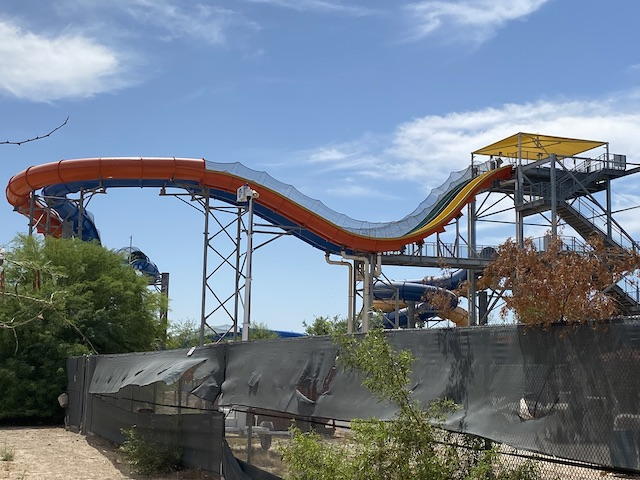

| |
Bahama Blaster Review

We're here at Six Flags Hurricane Harbor (Phoenix), and we're here to ride one of the coolest looking water slides in the country. Bahama Blaster. Now one thing particuarly stands out about Bahama Blaster. DUELING MASTER BLASTER!!! HELL F*CKING YES!!! THESE RIDES ARE ALREADY A TON OF FUN!!! BUT TO NOT ONLY HAVE THIS EXPERIENCE, BUT ALSO HAVE THE ABILITY TO HAVE A WATER SLIDE RACE WHILE DOING IT!!!? Yeah. My hopes were set REALLY high for this. *Sigh* Unfortunately, they were only running one side, killing any chance of having an amazing water slide duel. So unfortunately, this review will NOT contain a fun dramatic water slide race. And as a Master Blaster itself, this was one of the weaker ones. This sadly isn't gonna rank up along with Pelican Plunge, Wildebeest, Mammoth, or Zoomerang. But even the lesser Master Blasters are still one of better water slides, and it is the best water slide at Six Flags Hurricane Harbor (Phoenix). So let's go up the stairs, get in our tube, and down we go! We head down the first drop, and then head back up the hill. Yeah. You feel the LIMs on your ass, and you feel them pushing you uphill. But we're still having fun. Go through a curved tunnel. A little bit of a breather moment. Pop back out, and go down another drop! WEE!!! Go up another hill and into another tunnel. At this point, it's more of the same. Another curved tunnel. Pop back out, go down another drop, and up another hill. Copy and paste yet again. Sure wish I had people sliding next to me who I could yell at (They'd probably be distracted and ask "Why is that crazy blonde dude screaming at us?"). Though now we have some deviation in the ride. HOORAY!!! Instead of another enclosed turn, we now are going into a downward helix. Hey. Those are fun. Another way to gain some speed. And POP!!! Down another drop. We go up another hill. Except instead of going through another turn. The tunnel just features another drop. YAY!!! PROPER BUNNY HOP!!! Up another small hill, and into a tunnel turn. And we're going fast! Get some decent laterals here! AWESOME!!! IT'S STARTING TO GET REALLY GOOD!!!! It's now over. Aww man. =( But hey. This is still a really fun ride, and if you find yourself at Six Flags Hurricane Harbor (Phoenix), I HIGHLY recommend checking this slide out. Hopefully it's racing for you guys, unlike how it was for me.
7/10
Location: Six Flags Hurricane Harbor (Phoenix)
Opened: 2016
Built by: ProSlide
Last Ridden: June 10, 2022
Bahama Blaster Photos
Home
|